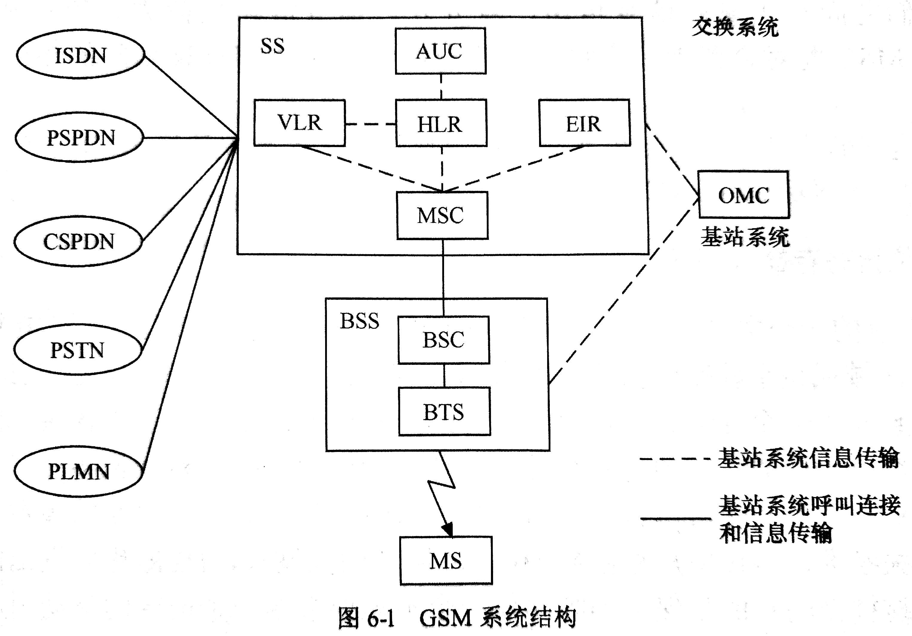
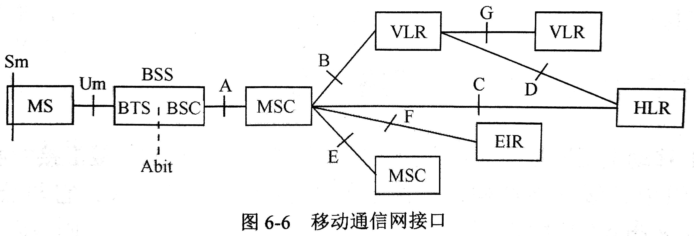

GSM 移动通信系统有什么特点？
- 具有漫游功能: 移动台识别码、位置登记、呼叫接续
- 提供多种业务: 话音、承载、补充、ISDN
- 较好的保密性: 通过加密技术
- 越区切换
- 容量大、音质好
GSM 通信系统由哪几部分组成？
- 移动台(MS)(Mobile Station): 实际上就是你的手机
- 无线基站子系统(BSS)(Base Station Subsystem)
- 交换网络子系统(SS)(Switching Subsystem)
- 操作维护子系统(OMC)(Operation Maintenance Center)

交换网络子系统由哪些实体组成？ 分别起什么作用？
EIR(Equipment Identity Register)设备识别寄存器: 数据库，存储与用户有关的设备参数AuC(Authentication Center)鉴权中心: 存储用户的加密信息VLR(Vister Location Register)访问位置寄存器: 数据库，存储来访用户位置的信息HLR(Home Location Register)归属位置寄存器: 数据库，存储本地用户的信息MSC(Mobile Switching Center)移动业务交换中心: 核心部分，对所负责区域所有移动台进行控制、完成话路交换、用户位置登记、越区切换、合法性检测等
移动通信网的接口有哪些？ 分别完成什么样的功能？

- Sm: 用户识别，比如
面部扫描器与MS(Mobile Station)、SIM卡接口 - Um: 空中接口，用于连接
MS与BTS - Abit: 用于BTS与BSC (注意: 一个
Base Station Controller管理多个Base Transceiver Station。而Base Transceiver Station则直接与Mobile Station交互(互发信息)) - A接口: 用于连接
MSC(Mobile Switching Center)与BSS(由BTS与BSC构成) - ...
解释 MSISDN、IMSI、IMEI
MSISDN: Mobile Station International Subscriber Directory Number，国际身份号码
MSISDN = CC + NDC + SN
CC：Country Code，含义为国家码，因为陆地移动网络遍布全球各地，自然需要对不同国家的移动用户进行区分，中国的国家码为86。
NDC：National Destination Code，表示国内目的地码，也称网络接入号。为保障消费者的利益并允许合理的市场竞争，每个主权国家都可以授权一个或多个网络运营商组建并经营移动网络，例如中国三大移动运营商之中国移动网络接入号为134~139、150~152、188等，中国联通为130~132、185~186等，中国电信为133、153、180、189等。
SN：Subscriber Number，客户号码。
IMSI: International Mobile Subscriber Identification Number，国际移动用户识别码
IMSI = MCC + MNC + MSIN
MCC（Mobile Country Code，移动国家码）：MCC的资源由国际电信联盟（ITU）在全世界范围内统一分配和管理，唯一识别移动用户所属的国家，共3位，中国为460。
MNC（Mobile Network Code，移动网络号码）：用于识别移动用户所归属的移动通信网，2~3位。 在同一个国家内，如果有多个PLMN（Public Land Mobile Network，公共陆地移动网，一般某个国家的一个运营商对应一个PLMN），可以通过MNC来进行区别，即每一个PLMN都要分配唯一的MNC。中国移动系统使用00、02、04、07，中国联通GSM系统使用01、06、09，中国电信CDMA系统使用03、05、电信4G使用11，中国铁通系统使用20。
MSIN（Mobile Subscriber Identification Number，移动用户识别号码）：用以识别某一移动通信网中的移动用户。
IMEI: International Mobile Equipment Identity，国际移动设备识别码
手机IMEI码由15位数字组成。
第一部分 TAC，Type Allocation Code，类型分配码，由8位数字组成（早期是6位），是区分手机品牌和型号的编码，该代码由GSMA及其授权机构分配。其中TAC码前两位又是分配机构标识（Reporting Body Identifier），是授权IMEI码分配机构的代码，如01为美国CTIA，35为英国BABT，86为中国TAF。
第二部分 FAC，Final Assembly Code，最终装配地代码，由2位数字构成，仅在早期TAC码为6位的手机中存在，所以TAC和FAC码合计一共8位数字。FAC码用于生产商内部区分生产地代码。
第三部分 SNR，Serial Number，序列号，由第9位开始的6位数字组成，区分每部手机的生产序列号。
第四部分 CD，Check Digit，验证码，由前14位数字通过Luhn算法计算得出。
介绍GSM的主要业务
- 语音业务
- 短消息业务
- 承载业务:
好像是上网 - 补充业务
什么叫时隙？ 时隙中的信息格式(突发脉冲序列)有哪些？
时隙: time-slot
突发脉冲序列:
- 常规突发脉冲序列: Normal Brust，用于携带TCH、FACCH、SACCH、SDCCH、BCCH、PCH和AGCH信道的消息
- 频率校正突发脉冲序列: Frequency Correction Burst，用于携带FCCH信道的消息
- 同步突发脉冲序列: Synchronization Burst，用携带SCH信道的消息.
- 接入突发脉冲序列: Access Burst，用于携带RACH信道的消息
- 空闲突发脉冲序列: Dummy Burst，当系统没有任何具体的消息要发送时就传送这种突发脉冲序列
分别介绍业务信道和控制信道的组合形式
业务信道: TCH
控制信道:
广播信道(BCH） 是一种“一点对多点”的单方向控制信道，用于基站向所有手机广播公用信息。其中又分为：
- 频率校正信道(FCCH): 传输供手机校正其工作频率的信息
- 同步信道(SCH）
- 广播控制信道(BCCH): 传输通用信息，用于手机测量信号强度和识别小区标志等。
公共控制信道(CCCH） 是一种“一点对多点”的双向控制信道，其用途是在呼叫接续阶段，传输链路连接所需要的控制信令与信息。
- 寻呼信道(PCH): 传输基站寻呼手机的信息； 这是一个下行信道，用于寻呼被叫的移动台，当网络想与某一MS建立通信时，它会根据MS当前所登记的LAC向该LAC区域内所有小区通过PCH信道发寻呼消息，标示为TMSI或IMSI
- 随机接入信道(RACH): 手机申请入网时，向基站发送入网请求信息； 上行信道，用于移动台随机提出入网申请，请求分配一个SDCCH
- 准许接入信道(AGCH): 是基站在呼叫接续开始时，向手机发送分配专用控制信道的信令。 这是一个下行信道，用于基站对移动台的入网请求作出应答，即分配一个SDCCH或直接分配一个TCH
专用控制信道(DCCH) 是一种“点对点”的双向控制信道，其用途是在呼叫接续阶段和在通信进行当中，在手机和基站之间传输必需的控制信息。
- 独立专用控制信道(SDCCH): 传输手机和基站连接和信道分配的信令； 是双向专用信道，传送建立连接的信令消息、位置更新消息、短消息、鉴权消息、加密命令、信道分配消息、以及各种附加业务等
- 慢速辅助控制信道(SACCH): 在手机和基站之间，周期地传输一些特定的信息，如功率调整、帧调整和测量数据等信息
- 快速辅助控制信道(FACCH): 传送与SDCCH相同的信息。这种信道的传输速率较快
简述位置更新的流程
移动台从一个位置区(属于的覆盖区)移动到另一个位置区(属于 的覆盖区)。
通过检测由持久发送的广播信息，
移动台发现新收到的位置区与目前所使用的位置区不同。移动台通过该基站向发送含有"我在这里"的信息位置更新请求。
由向发送消息。
发回响应消息，其中包含全部相关的用户数据。
在被访问的中进行用户数据登记。
把
有关位置更新响应消息通过基站送给移动台。通知原来的删除与此移动用户有关的用户数据。
怎样实现移动用户的安全保密？
TMSI(Temporary Mobile Subscriber Identity)用户临时识别码: MS每向系统请求位置更新、呼叫尝试等，系统将分配一个新的 TMSIPIN(Personal Identification Number)用户身份号: SIM卡密码，3次试错机会，10次输错永久报废